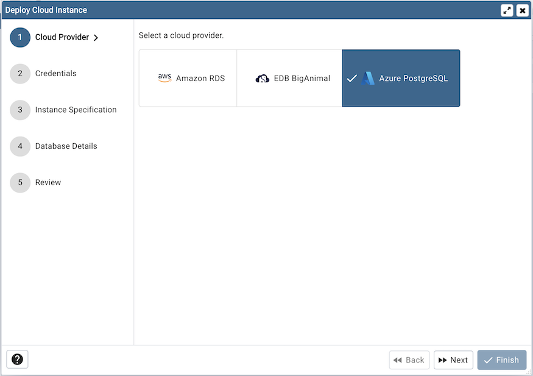
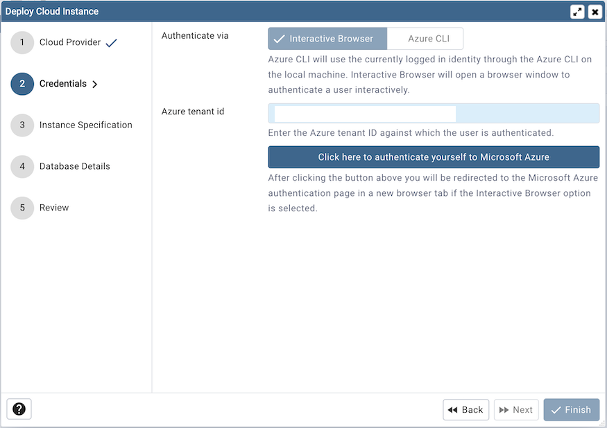
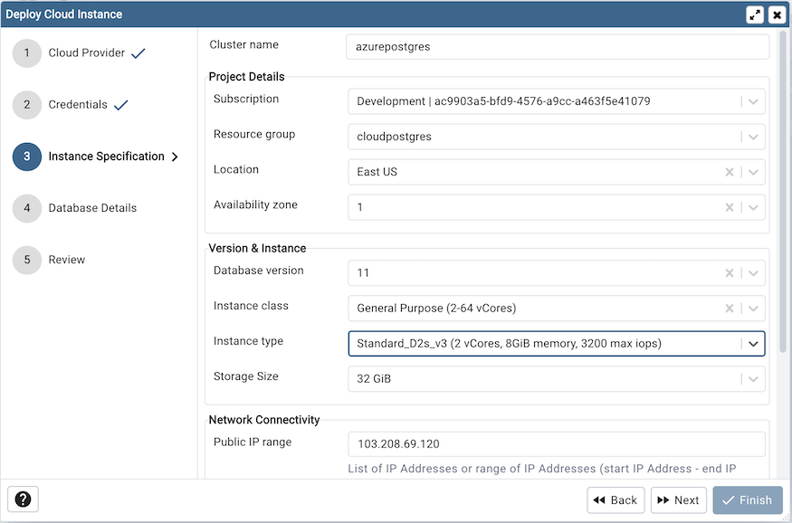
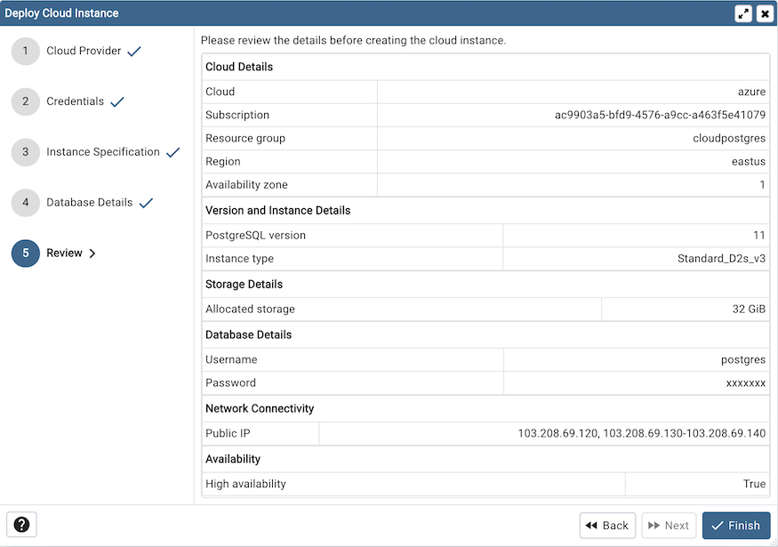
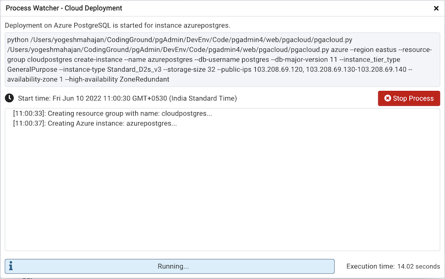

Azure PostgreSQL Cloud Deployment¶
To deploy a PostgreSQL server on the Azure cloud, follow the below steps.
Once you launch the tool, select the Azure PostgreSQL option. Click on the Next button to proceed further.
In the Credentials dialog, select authentication method either interactive browser or Azure CLI. Azure CLI will use the currently logged in identity through the Azure CLI on the local machine. Interactive Browser will open a browser window to authenticate a user interactively.
Use the Azure tenant id to specify Azure tenant ID against which user is authenticated.
Clicking the Click here to authenticate yourself to Microsoft Azure button, user will be redirected to the Microsoft Azure authentication page in a new browser tab if the Interactive Browser option is selected. Azure CLI authentication can be used only in Desktop mode.
Once authentication is completed, click on the next button to proceed.
Use the fields from the Instance Specification tab to specify the Instance details.
Use the Cluster name field to add a name for the PostgreSQL server; the name specified will be displayed in the Browser tree control too.
Select a subscription from the Subscription options which are populated based on user access levels in Azure portal.
Select the resource group from Resource Group dropdown under which the PostgreSQL instance will be created.
Select the location to deploy PostgreSQL instance from Location options.
Select the availability zone in specified region to deploy PostgreSQL instance from Availability zone options.
Use Database version options to specify PostgreSQL database version.
Use the Instance class field to allocate the computational, network, and memory capacity required by planned workload of this DB instance.
Use the Instance type field to select the instance type.
Use the Storage size option to specify the storage capacity.
Use the Public IP field to specify the List of IP Addresses or range of IP Addresses (start IP Address - end IP address) from which inbound traffic should be accepted. Add multiple IP addresses/ranges separated with commas, for example: “192.168.0.50, 192.168.0.100 - 192.168.0.200”
Use Zone redundant high availability option to specify High Availability option. Zone redundant high availability deploys a standby replica in a different zone. The Burstable instance type does not support high availability.
Use the fields from the Database Details tab to specify the PostgreSQL database details.
Use the drop-down list in the pgAdmin server group field to select the parent node for the server; the server will be displayed in the Browser tree control within the specified group.
Use the Admin username field to add the database name for the PostgreSQL server.
Use the Password field to provide a password that will be supplied when authenticating with the server.
Use the Confirm password field to repeat the password.
Click on the next button to proceed.
At the end, review the instance details that you provided. Click on Finish button to deploy the instance on Azure PostgreSQL.
Once you click on the finish, one background process will start which will deploy the instance in the cloud and monitor the progress of the deployment. You can view all the background process with there running status and logs on the Processes tab
The Server will be added to the tree with the cloud deployment icon. Once the deployment is done, the server details will be updated.